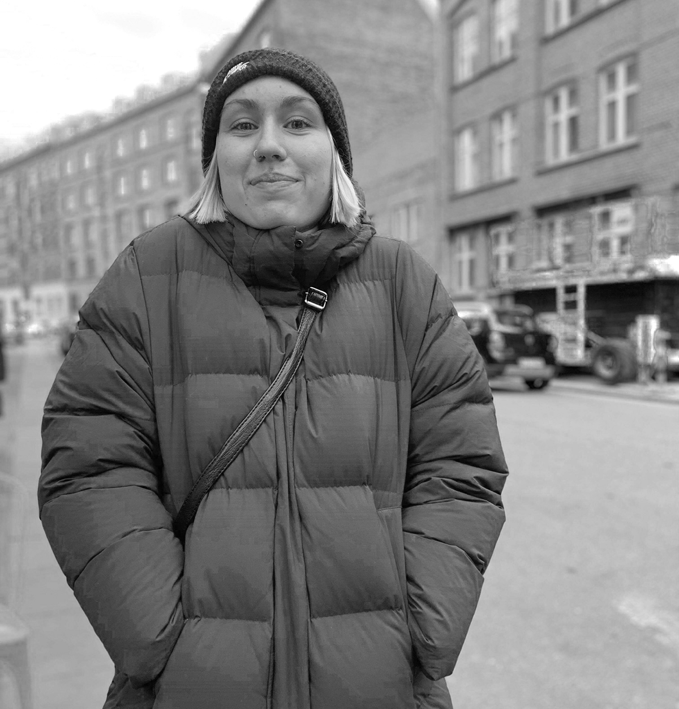

Jeg er Dina, 24 år og en nylig innflytter til Danmark. Med en fersk bachelorgrad i Strategi og PR fra Westerdals Oslo ACT, var jeg klar for å også tilegne meg teknisk kompetanse. Ved å studere multimediedesign, håper jeg å kunne kombinere egenskaper tilknyttet strategi, analyse og helhetlige kommunikasjonsprosesser, med produksjonsevne og et øye for visuell kommunikasjon. Jeg ønsker å ta del i prosesser der jeg kan bidra i flere ledd, og hvor jeg kan være særlig god til å skape visuell kommunikasjon med et strategisk perspektiv.

FERDIGHETER:
Jeg behersker html og css, og og grunnleggende java script. Hva gjelder Adobe-programmer, har jeg ferdigheter innen Indesign, Photoshop, Illustrator og XD. Jeg har også grunnleggende ferdigheter i Google Adwords.
KOMPETANSE: Jeg kan arbeide strategisk, med overordnet kommunikasjonsplanlegging, kampanjevirksomhet og visuell kommunikasjon. Jeg har erfaring med ulike metoder, slik som 5 Whys, arketyper og Design Sprint. På KEA lærer jeg hvordan man kan bruke designteori og user research til å gjøre gode visuelle valg, og til å optimalisere UX.
INTERESSER: Jeg liker å skrive skjønnlitterært, tegne hus, og se merkelige videoer på YouTube. Jeg synes også multimediedesign er meget engasjerende, og har i løpet av semesteret fått interesse i å leke meg med både koding og Adobe-programmer.
AMBISJONER: Jeg ønsker å kunne bidra på flere felt i en fremtidig arbeidssituasjon - og fylle flere roller, om det trengs. Jeg har ambisjoner om at jeg skal beherske godt alt det vi foreløpig lærer på KEA; om UX, koding, design og videoproduksjon. Ellers ønsker jeg en dag å kunne kalle meg forfatter, i større eller mindre grad.